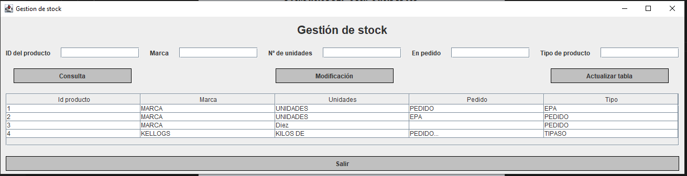

Esta pantalla accederemos a través del botón de Gestión de stock o a través del menú en
Archivo -> Gestión de producto

Nos permite...
- Consultar el stock, con consultas dinámicas
- Modificar cualquier registro
- Actualizar la tabla, por si la BBDD se ha modificado recientemente